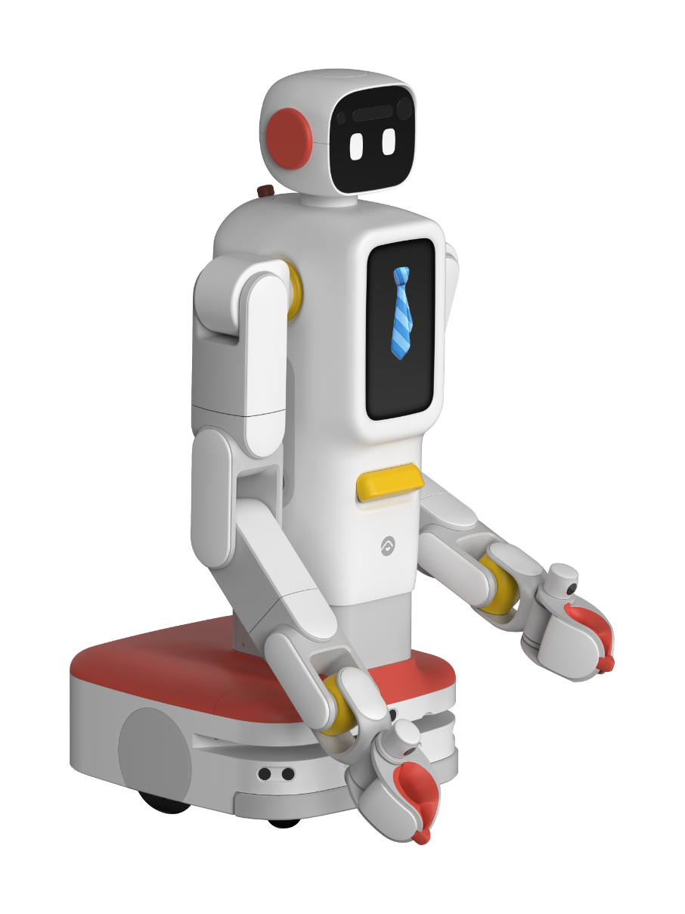

F2
A wheeled humanoid robot from China.
Sources retrieved: 8 October 2026 (A, B)
- Intended use, per the manufacturer
- Not stated
- Indicative price
- Not stated

Manufacturer's rendering.
Specifications
3/32 specifications disclosed 29 not stated
29 fields hidden
How to read the figuresShow guideClose
- not statedNo source
- noStated by a source
- 0Reported as zero
- ASource
- A*Source with a caveat (select it)
- CERecords only what the manufacturer states regarding CE marking.
Select a source marker for source details and notes.
Physical2/13 disclosed
Power1/5 disclosed
Sensing and autonomy0/6 disclosed
Payload and expansion0/3 disclosed
Commercial0/1 disclosed
Compliance & certifications0/4 disclosed
Against the field
Each strip holds every robot of this type in the guide that states the figure, one bar per group of values. Further right means a larger figure, not a better robot. A taller bar means more robots in that group.
Degrees of freedom
21DoF
100 wheeled humanoids state degrees of freedom
68 state a higher figure, 21 a lower one. 4 more state exactly the same figure. 6 state only a bound (≥ or ≤) and are not ranked.
Runtime
more than 480minNote: load condition not stated
106 wheeled humanoids state a runtime
F2 states a lower limit, not one figure, so it is shown open-ended and not ranked against the others. 30 state only a bound (≥ or ≤) and are not ranked.
Notes
Futuring calls F2 its second-generation all-round home robot for household chores and family care.
The producer's photo of F2 shows a torso with a head and two arms on a wheeled base.
The page gives a reach of 0 to 2100 mm, 24 sensors and a standby time of more than 24 hours.
El Español reports that hundreds of families in China will take part in a pilot programme with F2 (translated from the Spanish).
Sources
One line per source, not per figure: a source has one retrieval date.
- Afuturingrobot.comMain source. Retrieved 8 October 2026
- Belespanol.com/omicrono/tecnologia/20260415/china-deja-ridiculo-resto-robots-sirvientes-ayudando-familias-hogares-reales/1003744207685_0.htmlSecondary. Retrieved 8 October 2026